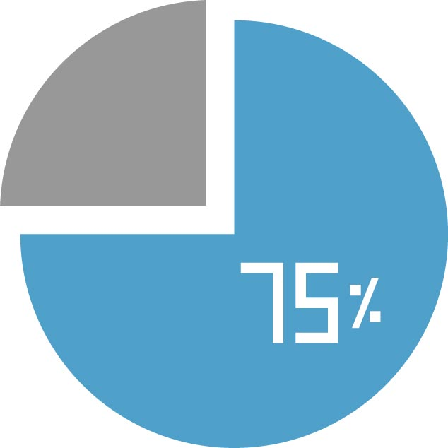
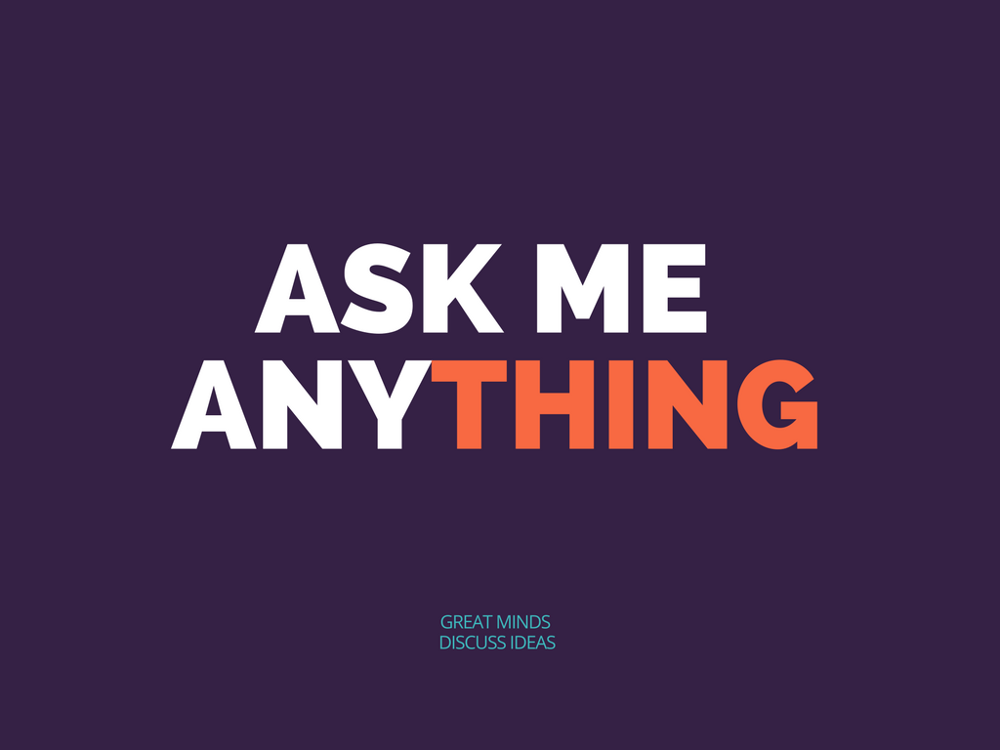
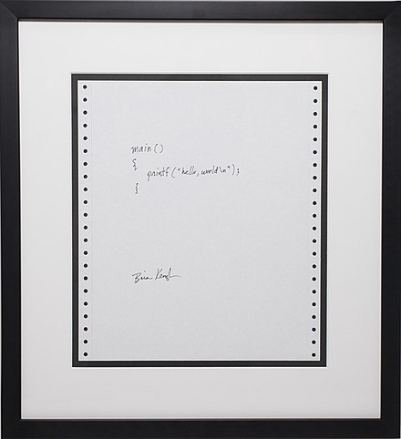

Introducing C
Hengfeng Wei (魏恒峰)
hfwei@nju.edu.cn

Sep. 27, 2021
Questionnaire

$75\%$ of students are new to programming.
To C Beginners

From Beginners to Masters
Programming
De-programming
What is C?
C is a computer programming language (PL).
You communicate your ideas to computers via PLs.
What is C?
Programming is NOT (only) about languages.
Programming is not about C.
You learn C to express YOUR IDEAS.
How to Learn (1)?

How to Learn (2)?

"无他, 但手熟尔"
How to Learn (3)?

How many bugs have you ever produced?
C Programming:
A Modern Approach


C Primer Plus


K&R C Bible


K&R
Brian W. Kernighan (1942 ~)

Dennis M. Ritchie (1941 ~ 2011)
Examination and Scores
-
考勤 -
期中测试 -
期末笔试 - 期末机试 (30 分)
- 编程练习 (70 分)
- 奖励
编程练习: 每周基础训练 (40 分) + 学期项目 (30 分; 2 个)
Q&A


CLion

"你有你的选择, 而我选择 CLion"
Hello World (K&R C)

Hello World (Standard C)
Brief History of C

You do not have to become a language lawyer.
Brief History of C
Turing Award (1983)
Game: Guess the Number
Game: Guess the Number

You think. I will type it for you.
How to Obtain a Random Number?

How to Obtain a Random Number?

How to Obtain a Random Number?

Code Style

Braces
Tabs vs. Spaces
Programming Style Guide


Secure C

How to Obtain a Random Number (Revisited)?

What is Next?
- Variables and Types (
int,double) - Math: computer arithmetic
- Input/Ouput (I/O)
- Branching: "if/else", "switch/case"
- Looping: "while", "do/while", "for"
- Jumps: "break", "continue", "goto"
- Functions & Libraries
Keeping Programming

No Plagiarism!!!

前两次各扣 10 分, 第三次总分降为 60 分 $\;(\times\; 60\%)$
Resources

6735 99232 2021-C-PL
Resources

发布课件、资料、调查问卷等
Resources


Types, Variables, IO
Hengfeng Wei
hfwei@nju.edu.cn

Sep. 27, 2021
Data Types
int double
int $\approx \mathbb{Z}$ double $\approx \mathbb{R}$
$3 \in $ int $-3 \in $ int
Data Types
$a \in $ int $b \in $ int
$a + b \in $ int
$a - b \in $ int
$a \times b \in $ int
$a \;/\; b \in $ int
Data Types
Data Type = Data Set + Operations
Variables
int number;
- Declare a variable with name called
number. - The type of
numberisint. numberrefers to a location (object) in memory.numberis uninitialized.- You can assign values to
numberlater.
Recommend
int number = 100;
number has also been initialized.
Declare vs. Define
int number = 100; is also a definition.
Any definitions are declarations.
But not all declarations are definitions.
int
INT_MAX INT_MIN
INT_MAX = 2147483647 INT_MIN = -2147483648
Output int
printf("Number is %d.\n", number)
printf("Number is %d, and Counter is %d.\n", number, counter)
printf
Input int
scanf("%d", &number)
scanf("%d%d", &number, &counter)
scanf
(1) Max: Taking the maximum of two ints
(2) Max: Taking the maximum of three ints
(3) Number of Digits
double
double pi = 3.14159f
Recommend!!! f???
Output and Input double
printf()
scanf()
Floating-point Arithmetic

"Floating-point arithmetic is complicated."
"Writing portable code is much more challenging."
"Writing good math functions is hard."
Floating-point Arithmetic
Overflow
Floating-point Arithmetic
Underflow
Floating-point Arithmetic
Significance Loss
Floating-point Arithmetic (Good News)
"Many applications don't need floating-point arithmetic at all."
Use math.h
double??? circle??? pi??? 周长;面积;体积
solving equations (root)
log, pow, floor, ceil
Books
TAOCP
CSAPP